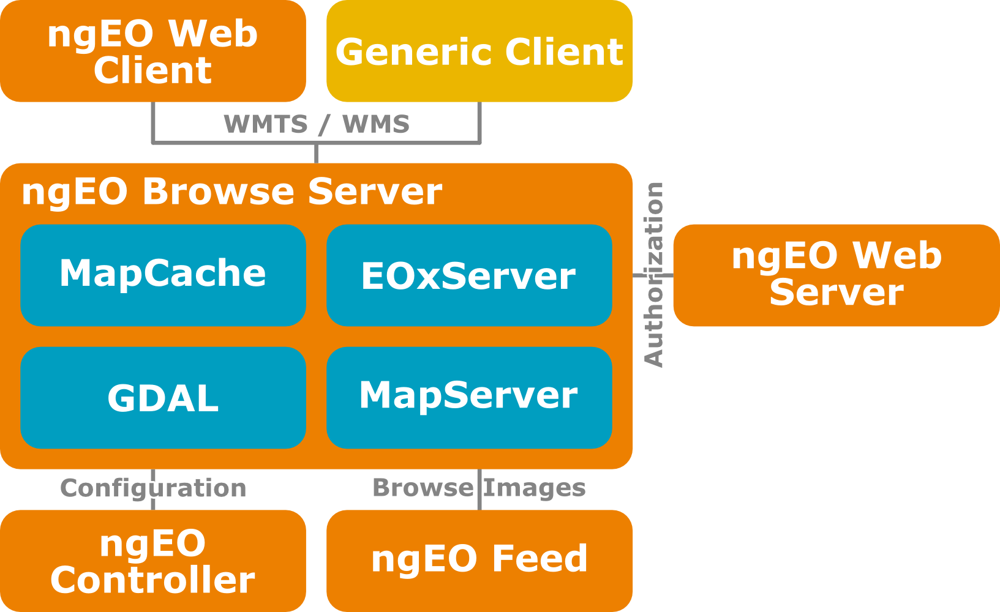
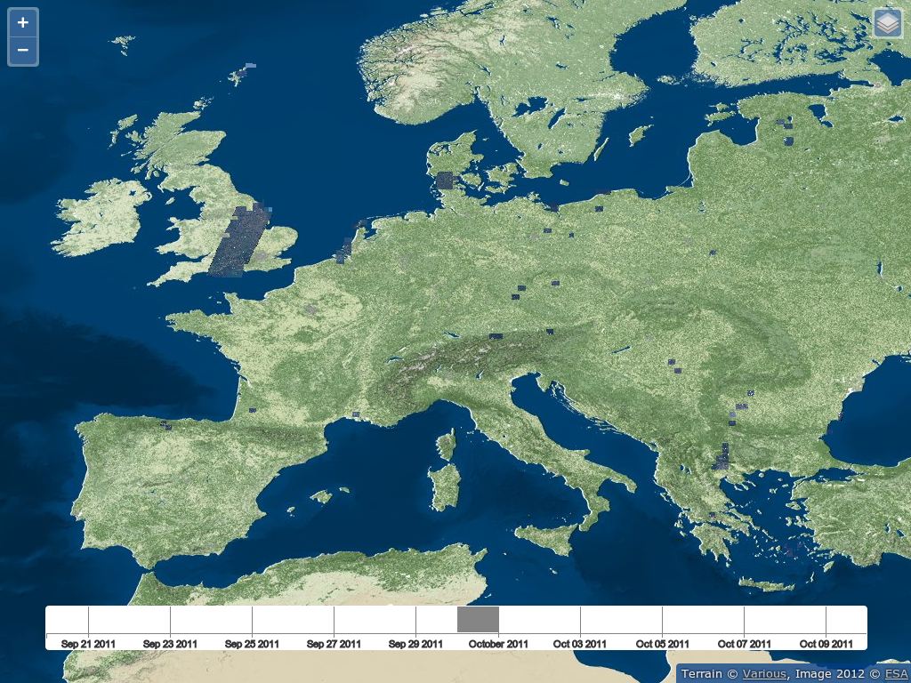
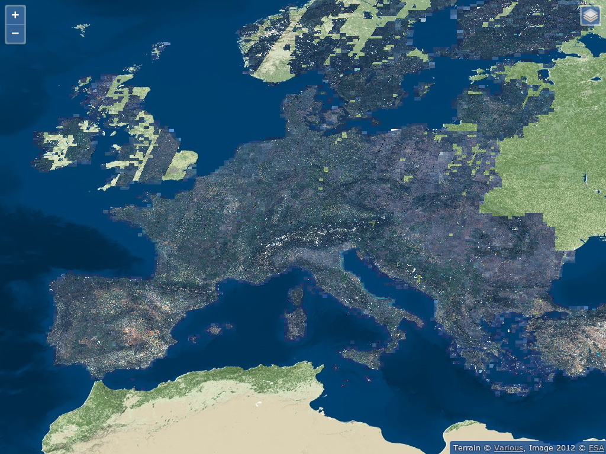
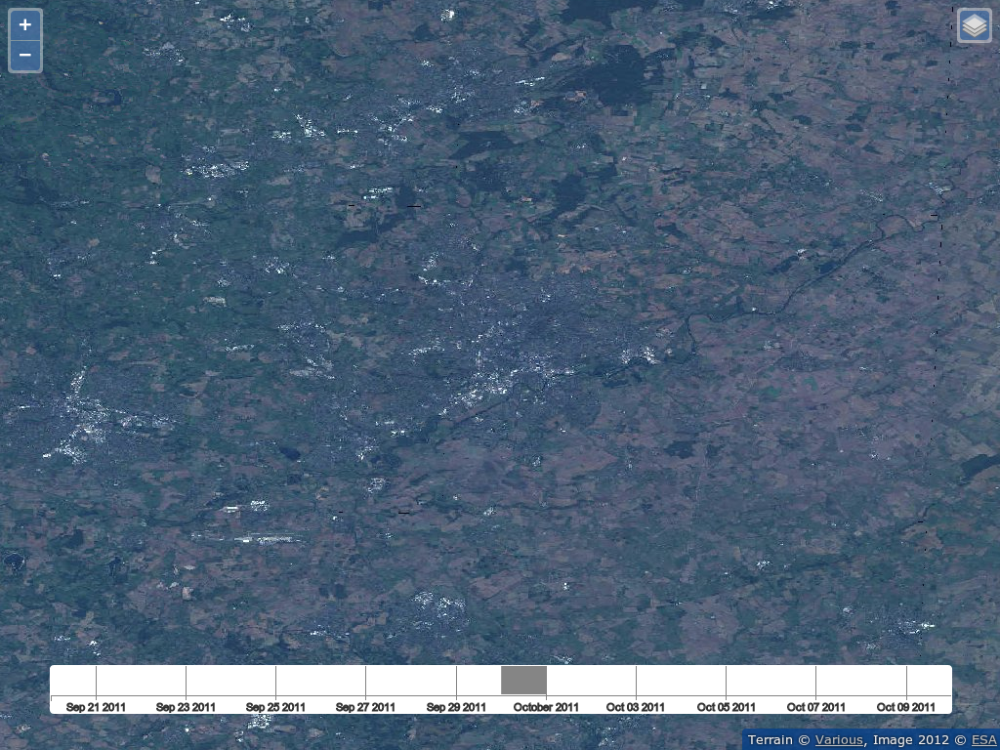
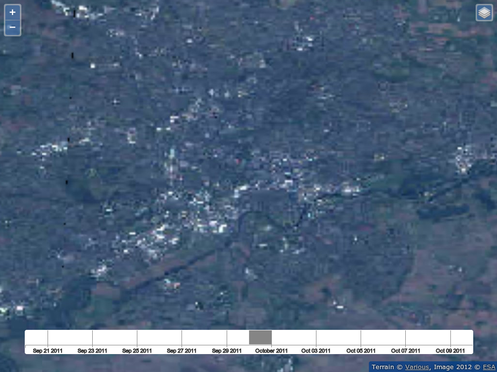

ESA User Services powered by Open Source
Created by:
Stephan Meissl, Thomas Bonfort, and Fabian Schindler

This work is licensed under a Creative Commons Attribution 3.0 Unported License.
Outline
- ESA User Services - ngEO
- ngEO Browse Server
- MapCache Enhancements
- Live Demonstration
ESA User Services - ngEO
- Operational Fully Online Data Access Service
- GMES and ESA Legacy Satellite Missions
- Fully Centralised Configuration Management
- Generic System usable for any Mission
ngEO Browse Server - Architecture
ngEO Browse Server
- Entirely based on Open Source Software
- OGC's WMTS and WMS Standards
- Configuration from ngEO Controller
- Data ingested by ngEO FEED
- Authentication using Shibboleth
- Authorization from ngEO Web Server
Preprocessing
- Input Geographic Metadata
- Footprint polygon
- Regular grid of tiepoints
- Pre-georeferenced images
- Optimizations
- Footprint generation
- Re-projection
- Addition of alpha-channel
- Internal tilling
- Overviews
- Compression
MapCache Enhancements
Time dimension support
...
/var/ngeob_data/mapcache.sqlite
select strftime('%Y-%m-%dT%H:%M:%SZ',start_time)||'/'||strftime('%Y-%m-%dT%H:%M:%SZ',end_time) from time where source_id=:tileset and start_time<=datetime(:end_timestamp,'unixepoch') and end_time>=datetime(:start_timestamp,'unixepoch') and maxx>=:minx and maxy>=:miny and minx<=:maxx and miny<=:maxy order by end_time limit 100
Visual representations of search results e.g. single browses or all browses in a specific time interval
Read-only functionality
...
true
Absent tiles are considered empty instead of being sent to WMS for generation
Configure max-cached-zoom
...
WGS84
Dynamically create high resolution tiles from lower resolution ones
Storage optimization e.g. detect_blank
foss4g.sqlite
true
9 bytes stored per tile (hex quadruplet). Dynamically returned as a 132 byte PNG.
Demonstration
Live
Time Slider
Entire Dataset
Nottingham
max-cached-zoom
Conclusions / Outlook
- Mature Open Source Software building blocks for operational software exist
- New Functionality is feed back
- Time axis is important
Acknowledgement
Funding has been provided by the European Space Agency (ESA) in the frame of the ngEO project.
Thank you for your Attention
- @eox_a, office@eox.at
- Stephan Meissl @Schpidi
- Fabian Schindler @constantinius13
- Thomas Bonfort @tbonfort
This work is licensed under a Creative Commons Attribution 3.0 Unported License.